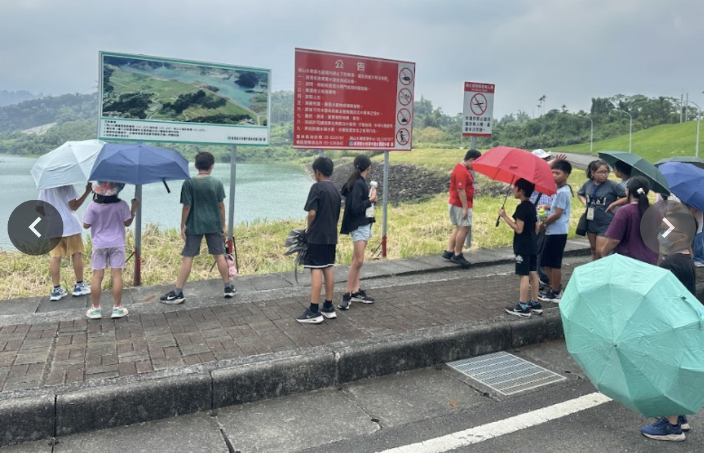
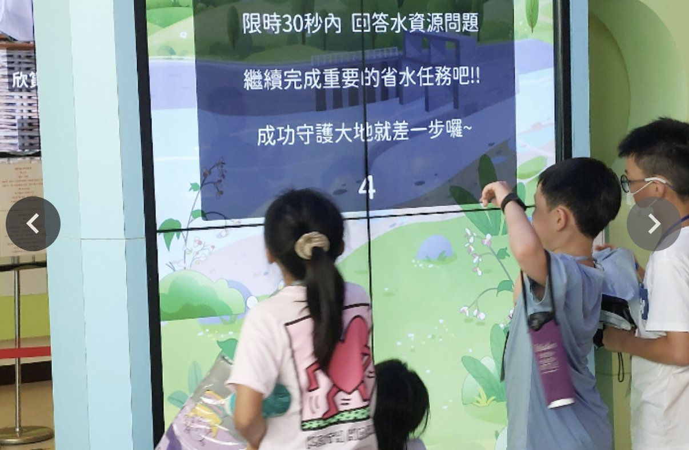
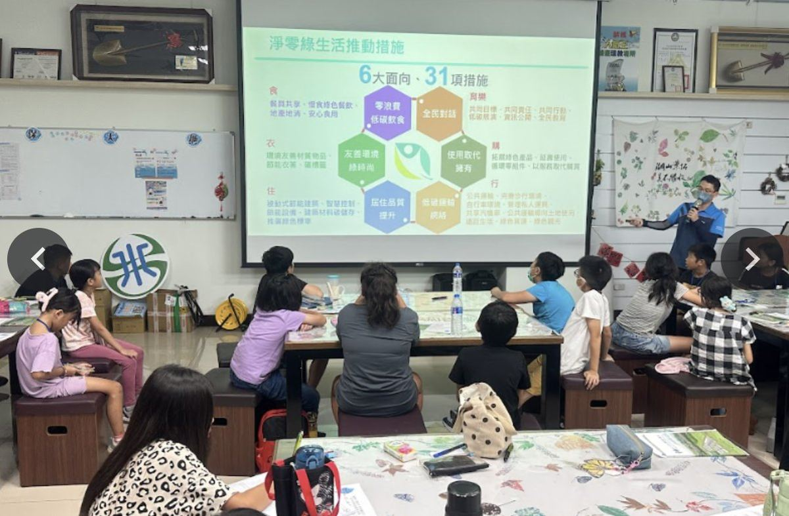

The Fun Journey of Water Resources飲水思源趣 — 湖山水庫戶外教學
Students took a field trip themed "The Fun Journey of Water Resources" to gain a deeper appreciation for the value of water.
We started our journey at the source—the Hushan Reservoir—exploring where our water comes from, how it's purified, and how it reaches our homes.
In addition to visiting water facilities, we became little water engineers, building bridge pier models and playing interactive games to learn about water conservation. This trip helped students connect classroom knowledge with real-life experience and fostered a sense of responsibility for the environment.
We not only learned about the importance of water but also became little water engineers! Our teacher explained how early people cleverly built bridge piers to allow streams to flow smoothly. We then used bamboo chopsticks, rubber bands, and nets to build our own pier models.
On this trip, we visited the Hushan Reservoir to see the source of our water and its magnificent storage facilities. Then, we made our way to a water treatment plant, where a guide explained how water is purified step-by-step.
After learning about water conservancy, we were excited to enter the interactive experience area. We took on the "Water-Saving Challenge" through fun digital games and learned how to use water resources wisely.
After visiting the outdoor facilities, we returned indoors for a rich environmental education class. The instructor used lively and engaging presentations to teach us about the sustainable use of water, global ecosystems, and biodiversity.



學生們透過一趟「飲水思源趣」校外教學，從玩樂中深刻體會水資源的珍貴！
我們從水的源頭 — 湖山水庫開始，一路探索水從何而來、如何被淨化，以及如何回到我們手中。
除了參觀水利設施，我們也化身為小小水利工程師，動手製作橋墩模型，更在有趣的互動遊戲中，學習珍惜水資源。這趟旅程讓孩子們將書本知識與生活經驗連結，也培養了對環境的責任感。
我們不僅學習了水資源的重要性，更化身為小小水利工程師！在老師的解說下，我們認識了早期人們如何運用智慧，建造橋墩讓溪水順利流過。接著，我們親手用竹筷子、橡皮筋和網子製作橋墩模型，在玩樂中學習建築與水利知識，也感受古人的偉大智慧。
這趟旅程，我們前往湖山水庫，親眼見識水的源頭與龐大壯觀的儲水設施。接著，我們來到淨水廠，從導覽人員的解說中，看到了水是如何經過層層淨化，從充滿雜質的溪水，變成清澈透明的自來水。
學習水利知識後，我們迫不及待地來到了互動體驗區。透過有趣的數位互動遊戲，我們挑戰「省水大考驗」，並了解水資源的利用方式。大家興奮地揮舞雙手，在遊戲中學習，也更深刻體會到珍惜水資源的重要性！
參觀完戶外設施後，我們回到室內，接受一場豐富的環境教育課程。講師透過生動有趣的簡報，帶領我們認識水資源的永續利用、地球環境與生物多樣性。大家專注地聆聽、踴躍地舉手發問，從這場課程中，學到了如何從自身做起，成為守護地球的小尖兵！